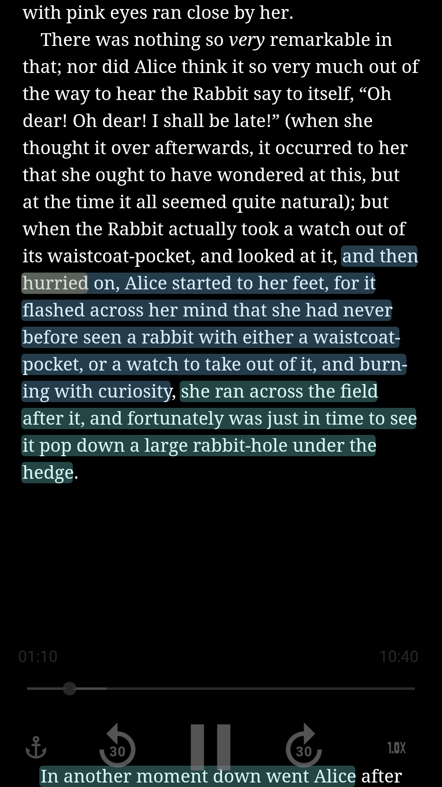
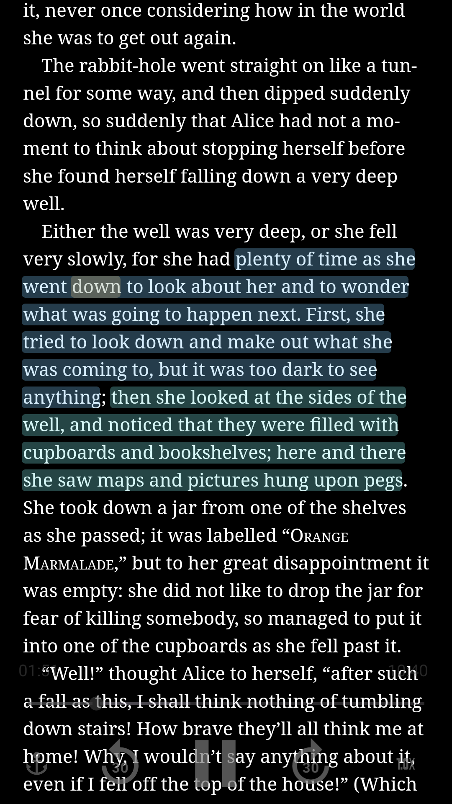
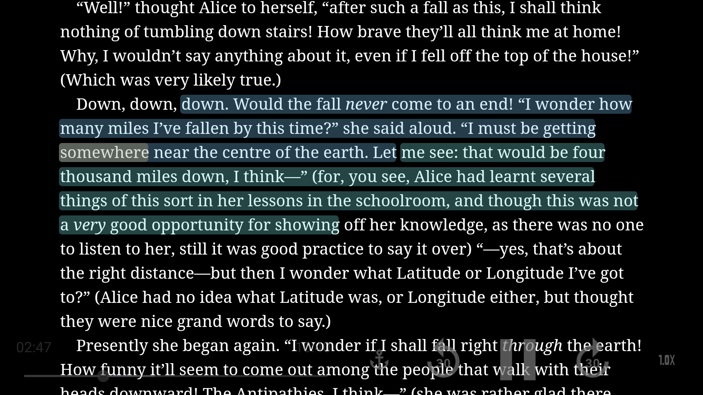
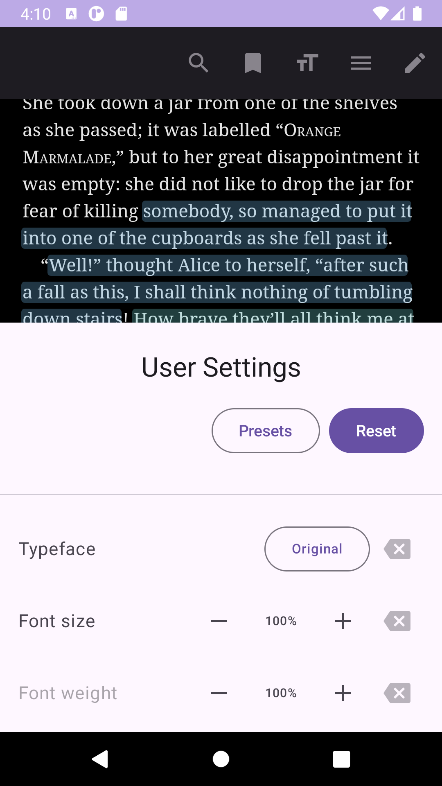

Read along with your audiobook. Every word, in sync.
AudEBook plays your audiobook and highlights each word in the eBook as the narrator reads it, so you can listen, read, or switch between the two without losing your place.
Free for Android. Works offline. Your books never leave your phone.

See it in action
A quick look at a book and its audiobook playing together.
Built for reading and listening together
Bring a DRM-free eBook and its audiobook. AudEBook works out where the narrator is and keeps the text in step.
Word-by-word highlighting
The passage being read is highlighted, and a cursor follows the narrator from word to word.
Finds its own place
Start the audio anywhere. AudEBook listens and finds the matching spot in the book by itself.
Scrolls with the narrator
The page keeps the current word comfortably in view, at any font size and in portrait or landscape. Scroll by hand and it waits for you.
Any speed
Speed it up to as much as 5x and the sync keeps up. Times are shown at your speed, so a 12-hour book at 2x reads 6 hours.
Chapter files as one book
An audiobook split into one file per chapter plays as a single book, with one timeline and no gaps in the sync.
Private by design
Speech recognition runs on your phone. No accounts, ads or tracking, and nothing is uploaded.
How it works
No pre-made sync files are needed. AudEBook works it out as you listen.
It listens ahead
While the audiobook plays, AudEBook transcribes the next few seconds of narration with a speech recognition model (OpenAI's Whisper) that runs entirely on your phone.
It finds the words
Each transcribed piece is matched against the eBook's text, so it knows exactly which sentence the narrator has reached, and learns the narrator's pace as it goes.
You read along
The matching text is highlighted and the page scrolls to keep it in view. Pause, skip, seek or change speed and it follows.
Get started
Setting up a book takes about a minute.
What you need
- An Android phone running Android 8.0 or newer (64-bit, as nearly all recent phones are).
- An eBook in EPUB format, without DRM.
- The same book as an audiobook, without DRM: one file (MP3, M4B, M4A, OGG, FLAC and more) or one file per chapter.
- An English recording of the same edition, or close to it.
Tip: keep each book in its own folder
Put the eBook and its audio files together in one folder. AudEBook can then add both in one step, and it plays chapter files in order by their names.
Number your files with leading zeros or plain numbers ("Chapter 2" comes before "Chapter 10" either way). Files in subfolders aren't included.
Set up a book
-
Add the book
Tap + on the bookshelf and choose A folder with the eBook and its audiobook in it together. Pick the book's folder and allow access.
-
Or add them separately
If the audio is stored somewhere else, choose An eBook (EPUB file) on its own, open the book, then tap Load Audio Book and pick the audio file or its folder.
-
Press play
Open the book and play. Within a few seconds the text the narrator is reading is highlighted and the page starts following along.
-
Nudge it with Anchor if needed
If the highlight ever lands in the wrong place, scroll to the paragraph being read and tap the anchor button. AudEBook resyncs from there.
Looking for books to try? Public-domain classics are a great start: get the eBook from Standard Ebooks and a free recording of the same title from LibriVox.
Made to stay out of the way
A dark theme and scrolling text by default, simple controls, and the font settings right where you expect them.



Questions
Does it work with Audible, Kindle or other store purchases?
Not usually. Books from most stores are protected with DRM, which stops other apps from opening them. AudEBook needs DRM-free files: books you own as plain EPUB and audio files, from DRM-free stores, or from the public domain.
Which languages are supported?
English for now. The on-device speech recognition model is an English one, so the audiobook needs to be narrated in English.
Does the eBook have to match the audiobook exactly?
No. AudEBook matches what it hears against the text and copes with small differences, such as a narrator's introduction or a slightly different edition. Abridged recordings and heavily edited editions sync less well.
Does it need an internet connection?
No. Transcription and syncing happen on your phone. The internet is only used if you choose to browse an online book catalog.
The highlight is in the wrong place. What do I do?
Scroll to the paragraph the narrator is reading and tap the anchor button. AudEBook takes that as the new starting point and carries on from there.
What about battery life?
AudEBook only transcribes a little ahead of what's playing, and stops while you're paused. Each part of a book is transcribed once and remembered, so rereading or relistening costs nothing extra.
Can I install the GitHub version and the Google Play version together?
They're signed differently, so one can't update the other. To switch, uninstall the version you have first, then install the other and add your books again.
Start reading along
AudEBook is free, with no ads or accounts.
The APK is for Android 8.0 or newer on 64-bit phones. Open it on your phone and allow installing from that source when Android asks.